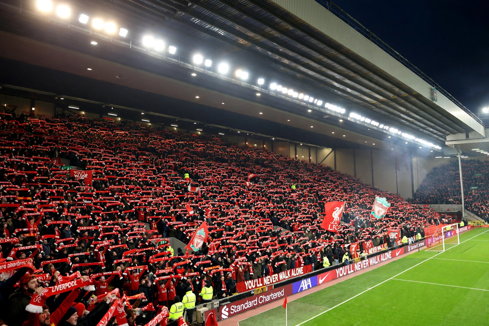

From Wikipedia, the free encyclopedia
| Anfield | |
|---|---|
 The Kop at Anfield filled with supporters holding scarves aloft before a night match | |
| Location | Anfield, Liverpool, England |
| Opened | 1884 |
| Owner / operator | Liverpool Football Club |
| Capacity | About 61,000 (after Anfield Road Stand expansion) |
| Tenants | Everton (1884–1892); Liverpool F.C. (1892–present) |
Anfield is a football stadium in the Anfield district of Liverpool, England, and the home of Liverpool F.C. since the club's formation in 1892. Built in 1884, it was originally the home of Everton, who left after a rent dispute in 1892; Liverpool were founded to play at the ground. With a capacity of roughly 61,000 following the expansion of the Anfield Road Stand, it is among the largest club stadiums in England. Anfield is famous worldwide for its atmosphere, centred on the Kop, the vast single-tier stand behind one goal whose supporters sing the club anthem "You'll Never Walk Alone" before matches.
The stadium's four stands are the Kop, the Main Stand, the Sir Kenny Dalglish Stand and the Anfield Road Stand. The Main Stand was rebuilt and greatly expanded, reopening in 2016, and the Anfield Road Stand expansion was completed during the 2023–24 season. Outside the ground stand statues of Bill Shankly and Bob Paisley, the Shankly Gates, and the Hillsborough memorial, commemorating the 97 Liverpool supporters unlawfully killed in the 1989 Hillsborough disaster. The players' tunnel carries the celebrated "This Is Anfield" sign, touched for luck by generations of Liverpool players.
Anfield has hosted many of European football's most storied comebacks, including Liverpool's 4–0 defeat of Barcelona in the 2019 Champions League semi-final, overturning a three-goal first-leg deficit without two of their star forwards. Its domestic rivalries — against Everton in the Merseyside derby and Manchester United at Old Trafford — are among the Premier League's fiercest fixtures.
Categories: Liverpool F.C. | Football venues in Liverpool | Sports venues completed in 1884